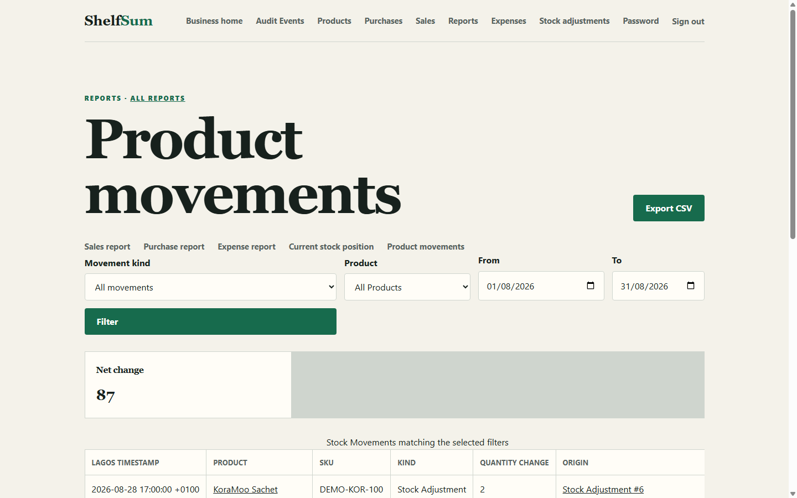
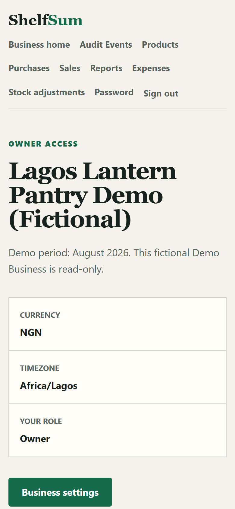

The problem
A stock balance is only useful when a shop can explain how it changed. A directly editable quantity cannot show which Purchases, Sales, adjustments, or reversals produced the current position, and it cannot preserve who recorded those actions.
ShelfSum is designed to answer two connected questions:
- Current position: How many units of each Product are on hand now?
- Audit trail: Which recorded actions caused that quantity to change?
Intended users
ShelfSum is designed around two distinct roles with server-enforced permission boundaries:
- Owner: Manages Business settings and Staff Members, records daily activity, reviews operational estimates, corrects completed documents through explicit void workflows, and inspects the Audit Event stream.
- Staff Member: Records and inspects day-to-day activity without Owner-only Business settings or Staff management controls.
Interface evidence
The verified screenshots below show the Owner dashboard, the Stock Movement report, and the responsive mobile dashboard using fictional Demo Business data.



Key decisions
Server-rendered Django
ShelfSum uses Django 5.2 LTS with server-rendered templates. Core workflows remain usable without JavaScript, while authentication, permissions, form validation, and CSRF protection stay at the server boundary. This keeps the first release focused on the inventory and transaction model instead of a separate API and client application.
Current balance plus immutable movement ledger
ShelfSum keeps stock_on_hand on each Product for direct reads and records every opening quantity, Purchase, Sale, adjustment, and reversal as an immutable Stock Movement. The two representations must reconcile. Corrections use explicit reversal or adjustment workflows instead of changing historical movements.
Explicit services instead of model signals
Multi-record changes run through named application services such as complete_sale, void_purchase, and record_stock_adjustment. These services make permissions, transaction order, row locking, rollback, movement creation, and Audit Events visible to tests and reviewers.
Testing
The accepted release baseline records the following verification evidence:
- 271 automated tests: The local SQLite suite passes with three documented PostgreSQL-only concurrency tests skipped.
- PostgreSQL release suite: GitHub Actions provisions PostgreSQL 17, converts any skip into a failure, and runs the complete suite.
- Covered behaviours: Permissions, cross-Business isolation, immutable history, stock reconciliation, replay protection, rollback, report/export parity, Demo fingerprints, and PostgreSQL concurrency.
Deployment
- Application: Render web service in Frankfurt running Python 3.13 and Gunicorn.
- Database: Neon PostgreSQL in Frankfurt.
- Static assets: WhiteNoise compressed manifest storage.
- Configuration: Restricted hosts, trusted origins, secure cookies, HTTPS proxy handling, HSTS, and a health endpoint.
Limitations
- Operational estimates: Estimated Profit is not accounting, tax, or cash profit, and current stock value uses each Product's current unit-cost estimate.
- First-release scope: One user can belong to one Business; quantities are whole numbers; currency and timezone are fixed to NGN and Africa/Lagos.
- Excluded integrations: Payments, invoicing, payroll, tax accounting, forecasting, barcodes, external catalogues, a REST API, and AI-dependent behaviour are outside the release.
- Demo latency: The free Render service may sleep while idle, so the first request after inactivity can be slower.